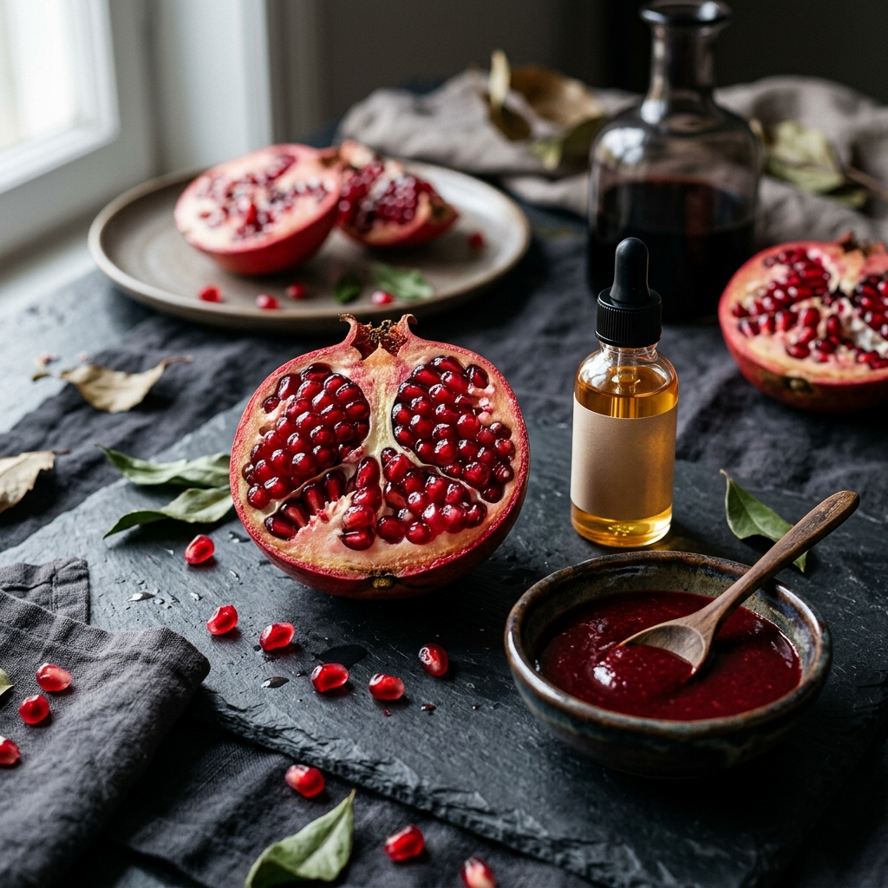

Granatapfel & Punicinsäure: Zellschutz, Herz & jugendliche Haut
Warum die rubinrote Frucht aus den sonnigen Tälern Anatoliens zu den stärksten Antioxidantien-Quellen der Natur gehört.

In der antiken Mythologie galt der Granatapfel als Symbol für Fruchtbarkeit, Schönheit und ewige Jugend. Heute entschlüsselt die moderne Molekularbiologie, was hinter diesem Ruf steckt: ein einzigartiges biochemisches Profil aus hochwirksamen Ellagitanninen und der extrem seltenen Omega-5-Fettsäure Punicinsäure.
Der Granatapfel (Punica granatum) zählt zu den ältesten Kulturpflanzen der Menschheit. In den sonnenverwöhnten Regionen Anatoliens reifen Granatäpfel heran, die weltweit für ihr intensives Aroma und ihre tiefrote Pigmentierung berühmt sind. Bei Anadoa Naturhaus verwandeln wir diese rubinroten Früchte in 100% naturreinen Sirup und schonend kaltgepresstes Kernöl.
Punicinsäure (Omega-5): Die seltenste Fettsäure der Natur
Während die meisten Menschen mit Omega-3 und Omega-6 vertraut sind, ist Omega-5 (Punicinsäure) ein wahrer Geheimtipp der Biochemie. Sie macht bis zu 70-80% des Fettsäurespektrums im Granatapfelkernöl aus.
Punicinsäure ist eine dreifach konjugierte Fettsäure mit außergewöhnlichen physikalischen und biochemischen Eigenschaften. Sie integriert sich gezielt in menschliche Zellmembranen und schützt diese wie ein molekularer Schild vor Lipidperoxidation – dem Prozess, durch den freie Radikale Zellen zerstören und beschleunigte Alterung auslösen.
Punicalagine & Ellagsäure: Maximale Antioxidantien-Dichte
Was den Granatapfel so überlegen macht:
- Punicalagine: Die größten bekannten Polyphenolmoleküle, die fast ausschließlich im Granatapfel vorkommen. Sie weisen eine bis zu 3-fach höhere antioxidative Kapazität auf als Grüntee oder Rotwein.
- Ellagsäure: Wird im Darm zu Urolithin A verstoffwechselt – einem körpereigenen Stoff, der die sogenannte Mitophagie (die Selbstreinigung alter Mitochondrien) anregt.
- Gefäßschutz & Stickstoffmonoxid (NO): Fördert die endotheliale Entspannung der Blutgefäße und unterstützt so einen gesunden Blutdruck.
Echter anatolischen Granatapfelsirup (Nar Ekşisi) vs. Zuckersirup
Ein echtes Ärgernis im Handel: Viele Produkte, die als "Granatapfelsauce" verkauft werden, enthalten kaum 10% Granatapfelsaft, dafür aber Glukosesirup, Farbstoffe und künstliche Säuerungsmittel.
Unser Anadoa Granatapfelsirup (Nar Ekşisi) ist das exakte Gegenteil: Aus rund 12 bis 15 Kilogramm sonnengereiften anatolischen Granatäpfeln wird durch behutsames Reduzieren genau 1 Liter zähflüssiger, tiefrot glänzender Sirup gewonnen. 0% zugesetzter Zucker, 100% pure Fruchtkraft.
Kulinarische und kosmetische Anwendung
- Im weltberühmten Gavurdağı Salat: Verrühren Sie den Sirup mit Anadoa Olivenöl und Anadoa Sumach (siehe unser Granatapfel-Walnuss-Salat Rezept).
- Als Glasur für Grillgut & Gemüse: Vor dem Backen oder Grillen dünn auf gebackenen Kürbis, Auberginen oder Tofu pinseln.
- Für die Haut: 2-3 Tropfen Granatapfelkernöl abends sanft in das noch feuchte Gesicht einklopfen für intensive Zellerneuerung über Nacht.
Fazit: Rubine für Ihre Langlebigkeit
Ob als edles Würzmittel in der mediterranen Gourmetküche oder als hocheffektiver Zellschutz: Der Granatapfel ist ein Meisterwerk der Natur, das Geschmack und Gesundheit in perfekter Harmonie vereint.